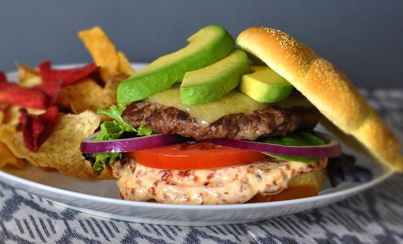

How to make a California Burger

The California Burger joins the freshness of California-style cuisine with the versatility of bacon in the form of Onion Bacon Jam to evoke a savory and sweet experience unlike any other. Chef Sean Thomes shares his recipe so you can make this delicious Burger at home.
Ingredients for the burger:
- 1 4oz Schweid & Sons Burger
- Onion Bacon Jam
- Green Leaf Lettuce
- Aged White Cheddar
- Fresh Avocado
Ingredients for the onion bacon jam:
- 1/2 lb Applewood Smoked Bacon (diced)
- 1/2 lb Red Onions (diced)
- 1/4 cup Brown Sugar
- 3 cloves garlic (minced)
- 1/4 cup Apple Cider Vinegar
- 1 tsp Kosher Salt
Steps to make it:
- Cook Burger to order.
- Place on bun with green leaf lettuce, aged white cheddar cheese, Onion Bacon Jam, and fresh avocado.
- On med-low heat render bacon for 10-15 minutes.
- When bacon becomes slightly brown add the onions and garlic.
- Continue to cook until the onions are translucent but not brown, approx. 10 minutes
- Once the onions are cooked add the remainder of the ingredients and cook until the sugar is dissolved and mixture is thick and gooey.
- Keep the jam warm and serve.
Notes/tips:
Bacon tip…Don't overcook the bacon! Too many people cook bacon too hot and too fast because there in a rush to get that luscious cured pork belly in their belly.
Return to homepage